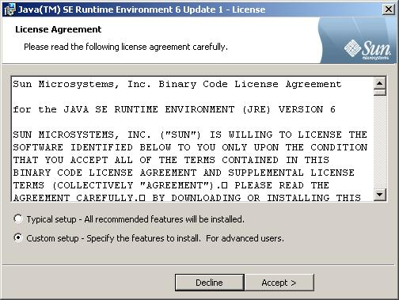
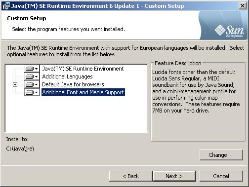
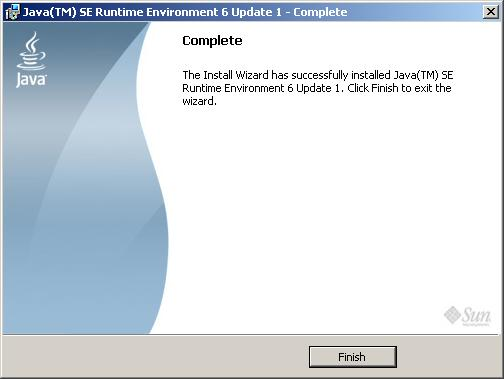
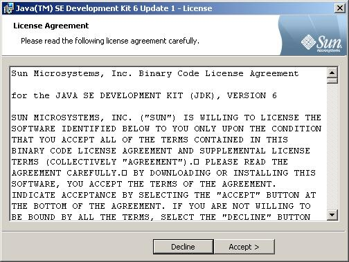
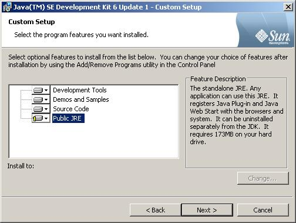
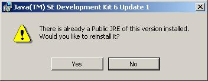
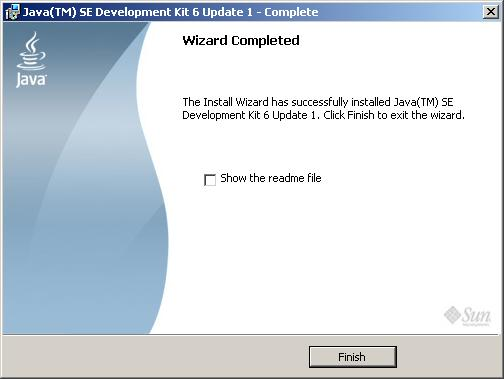

Table of Contents
This document provides the instructions for getting Java JRE and JDK installed. Currently (14-Apr-07) the JDK or JRE aren't required by the FieldWorks port but the JRE is used by several tools. The JDK also facilitates other development and testing functionalities.
![[Note]](../images/admon/note.gif)
|
Note |
|---|---|
|
Uninstall any existing JRE or JDK before doing the following installations. |
You need to download and install the following software packages. The links and versions are as of the 14-Apr-07.
- Java Development Kit (JDK) version 6 update 1
- Java Runtime Environment (JRE) version 6 update 1
- Java Cryptography Extension (JCE) Unlimited Strength Jurisdiction Policy Files 6
- The above are all downloadable from: http://java.sun.com/javase/downloads/index.jsp
|
|
Note |
|---|---|
|
-
The JRE is available as part of the JDK installer but by downloading it separately and installing the JRE first you obtain better control over it's install path location.
-
Launch the
jre-6u1-windows-i586-p.exeinstaller, select "Custom setup - ..." and click on "Accept >" -
Select all options and change the install path to
C:\java\jre\and then click "Next >". -
Click on "Finish".

-
Launch the
jdk-6u1-windows-i586-p.exeinstaller and select "Accept". -
Unselect the Public JRE and click Next.
 -
If the following dialog window appears it is because you forgot to unselect the "Public JRE" in the above dialog. If this dialog window appears then select "No".
 -
Click Finish.
